Fata Recon & AppSec Audit Suite v3.0
Problem: Pre-release web security hygiene checks often miss permissive CORS reflections, missing cookie flags, or unvalidated numeric query parameters, while third-party Python scanners frequently fail in constrained CI environments due to dependency conflicts or single-source crt.sh timeouts.
Engineering Decision & Trade-offs: Built strictly on Python 3's standard library (urllib.request, ssl, concurrent.futures) for zero-dependency portability. Aggregates passive subdomain OSINT across three independent providers (AlienVault OTX, HackerTarget, and crt.sh), performs non-destructive numeric boundary probing (0, -500, 1e308), and generates Markdown remediation reports with code blueprints.
